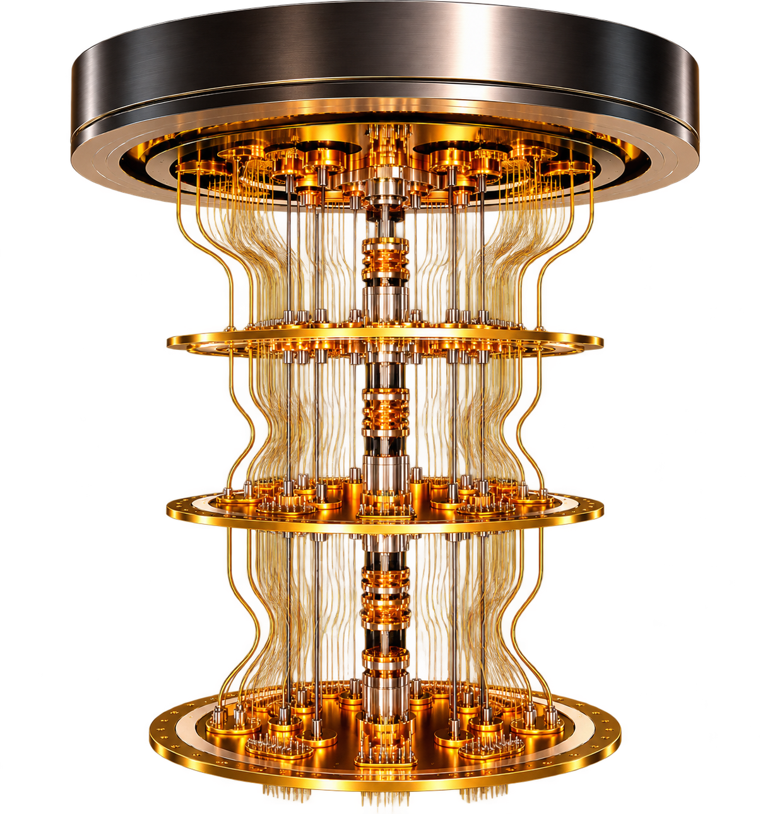
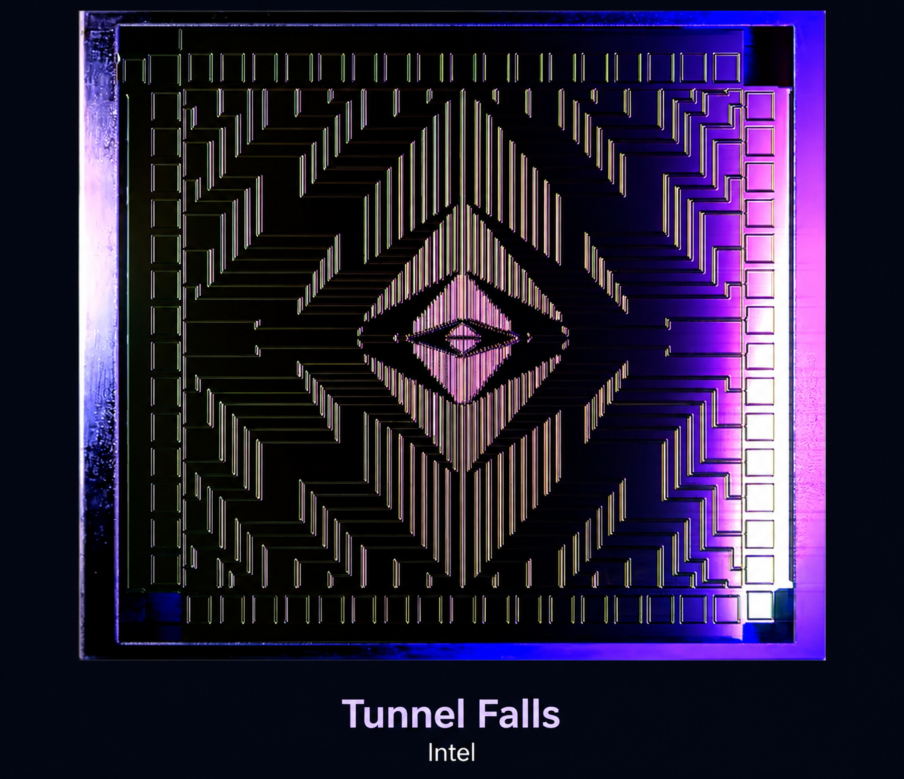
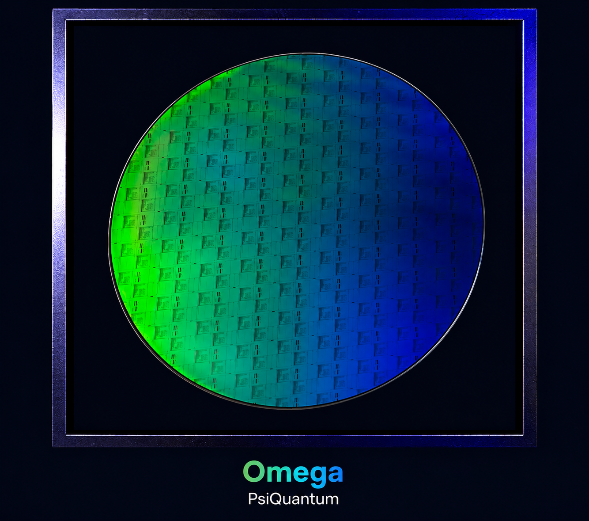
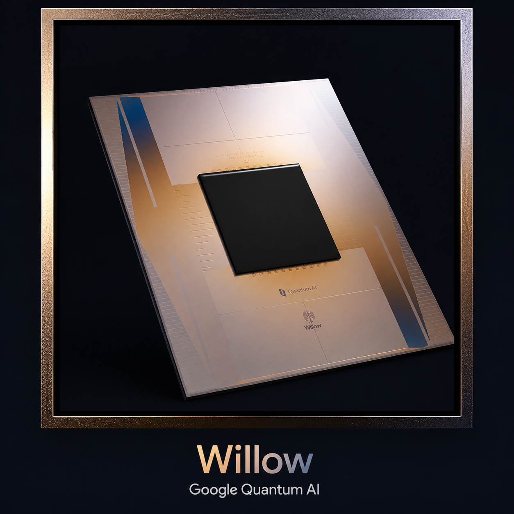

Fundamentals of Quantum Computing

What is Quantum Computing?
Quantum refers to the discrete, smallest units in which certain physical properties, such as energy, can exist or be exchanged.
Think of quantum as nature's ultimate Lego bricks. At the microscopic level, some physical properties don't change continuously; instead, they occur in specific, discrete amounts.
These tiny quantum systems can possess special properties—such as superposition and entanglement—that quantum computers harness to process information in ways that are fundamentally different from standard, bit-based computers.
Unlike classical computers, which typically use semiconductor transistors to represent bits, quantum computers can use different physical quantum systems as qubits. Companies and research groups around the world are developing several competing approaches.
Some of the important approaches include:
Electrons — Tiny Quantum Magnets

Companies such as Intel are developing spin qubits, where information is encoded in the spin state of individual electrons confined in silicon.
Carefully controlled electrical and microwave signals can manipulate these spin states, allowing them to represent and process quantum information.
Photons — Particles of Light

Companies such as PsiQuantum are developing quantum computers based on photons, or particles of light.
Photons can be generated, manipulated, and sent through tiny optical circuits to carry quantum information. One advantage of photonic systems is that they can operate without the extremely low temperatures required by superconducting qubits.
Superconducting Qubits — Artificial Atoms

Companies such as IBM and Google use superconducting qubits.
These are tiny electrical circuits made from superconducting materials and fabricated on chips. When cooled to extremely low temperatures, these circuits exhibit quantum behaviour and can act like artificial atoms, with controllable quantum states that can be used as qubits.